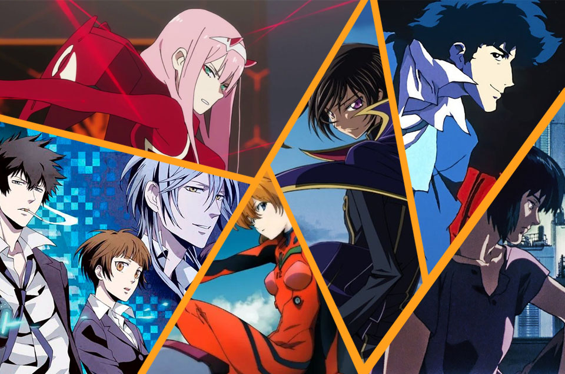

Anime de Pelea y accion
Dragon Ball Z (1989) Naruto (2002) ... One Piece (1999) ...
Fairy Tail (2009) ... Hunter x Hunter (2011) ... Fullmetal Alchemist: Brotherhood (2009) ... Yuu Yuu Hakusho (1992) ... Bleach (2004)
Uno de los 'géneros' que más éxito ha cosechado hasta la fecha se trata indudablemente del de 'lucha', el cual mayormente puede encontrarse en shounen.
A este pertenecen nombres históricos como "Dragon Ball Z" o "Yu Yu Hakusho", y hoy
repasaremos los que creemos son los mejores animes de lucha.
Anime de ficcion y fantacia
Code Geass... Cowboy Bebop ...
Darling in the FranXX ... Dr Stone ... Ergo Proxy ... Ghost in the Shell: Stand Alone Complex ... Gurren Lagann.

El género de la ciencia fícción es uno que despierta pasión desde hace décadas. Ya sea en campos como el cine o los videojuegos, los exponentes de este son muchos.
Similar es la situación para con el anime, un entretenimiento que con gran
regularidad se vale de elementos dignos de lo fantástico o fuera de lo común
Anime de Romance y comedia
Spy x Family (2022) Episodios: 12. ... Koi wa Sekai Seifuku no Ato de (2022) ... Kotaro Lives Alone (2022) ...
Thermae Romae Novae (2022) ... Aharen-san wa Hakarenai (2022) ... Komi-san wa, Comyushou desu. ...
Tonikaku Kawaii (2020)
... Kaguya-sama wa Kokurasetai: Tensai-tachi no Renai Zunousen (2019)
El estilo de comedia romántica de anime es exactamente lo que parece: comedia romántica. Se trata de descubrir el amor,
las amistades, los dulces recuerdos. Habrá malentendidos cómicos en el camino que conducirán a situaciones inesperadas
y mantendrán la historia en marcha.